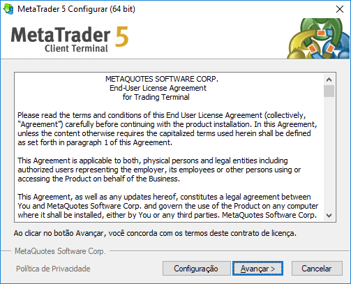
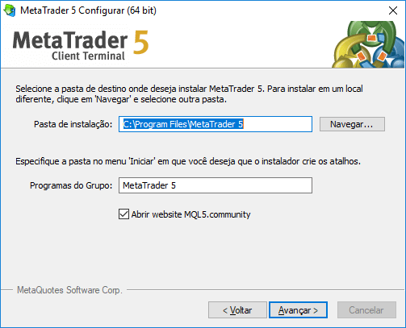
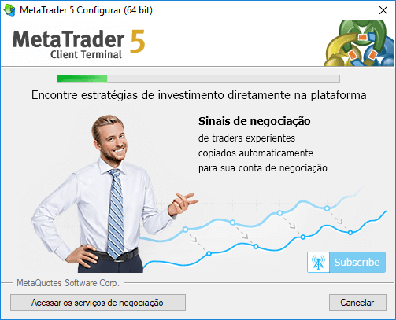
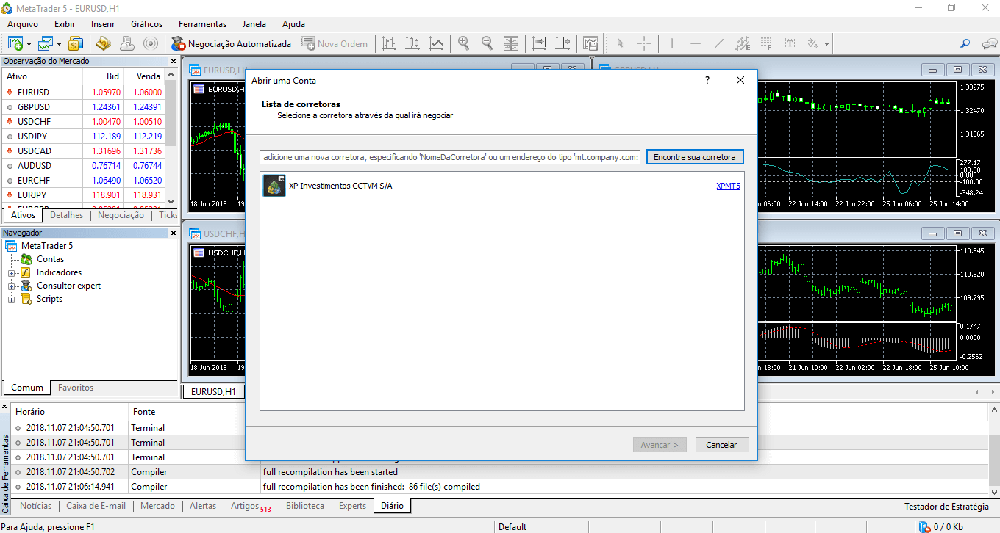

Instalação do MetaTrader 5
Muita gente tem falado sobre robôs de investimento, mas ainda existem muitas dúvidas de como funciona e principalmente como posso dar os primeiros passos. Neste artigo vamos mostrar o passo a passo de instalação e de configuração de uma conta demo em corretora.
Primeiros passos da instalação
O primeiro passo para quem quer trabalhar com robôs investidores é a instalação do MetaTrader 5. Como mostramos no post de apresentação da plataforma, ela é uma das mais usadas no mundo. Por isso vamos ver como fazer download do instalador para o Windows. Além disso, vamos ver como configurar uma conta demo da XP Investimentos, para começar a brincar com a ferramenta.
Download do instalador
Primeiramente é necessário fazer o download do instalador da plataforma. Nesse sentido podemos acessar o próprio site do MetaTrader 5 e baixar gratuitamente para o sistema operacional que você usa. Para este post vamos considerar a instalação para Windows. Muitas corretoras no Brasil, como a XP Investimentos por exemplo, também oferecem uma versão do instalador gratuitamente, mas vamos usar a versão original.
Passo a passo da instalação
Depois de realizado o download do arquivo chegou a hora de iniciar a instalação em si. Depois de um duplo clique no arquivo executável é exibida a tela abaixo. É possível seguir com o processo padrão, escolhendo o botão “Avançar >”, mas também é oferecida a possibilidade de olhar mais detalhes com o botão “Configuração”.

Caso seja escolhida a opção “Configuração” é possível alterar a pasta de instalação do MetaTrader, como exibido na imagem abaixo.

A instalação é bem simples e depois desses dois passos já segue para o progresso e posteriormente para a conclusão.

Configuração de uma conta demo
Ao concluir a instalação é exibida a tela inicial do MetaTrader 5, bem como a funcionalidade de escolha da corretora. Neste exemplo vamos considerar a XP Investimentos, solicitando e configurando um usuário e senha para uma conta demo.

Para solicitar o usuário e senha da conta demo já é necessário ter conta aberta na XP Investimentos. A criação não pode ser feita pela plataforma, principalmente pela necessidade de envio de documentos para abertura de contas na corretora.
No vídeo abaixo mostramos este passo a passo em detalhes, desde o download, passando pela instalação e configuração de conta demo.